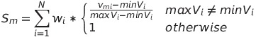

PriorityPruner
Table of Contents
1. Overview
PriorityPruner is a software program which can prune a list of SNPs that are in high linkage disequilibrium (LD) with other SNPs in the list, while preferentially keeping SNPs of higher priority (e.g., the most significant SNPs in a genome-wide association study). The process of pruning SNPs based on LD is sometimes referred to as "LD clumping".
2. Getting Started
2.1 Operating Systems
PriorityPruner works on multiple operating systems, such as Windows, Mac, and Linux. As long as you are able to install Java on your computer, the PriorityPruner should be able to run on your system.
2.2 Java Installation
PriorityPruner requires an installation of Java 1.8 or later. Visit the Java website for instructions on downloading and installing Java.
2.3 Download PriorityPruner
The PriorityPruner command-line software is packaged as executable jar file and can be downloaded here.
2.4 Running PriorityPruner
You can run PriorityPruner with the Java launcher (java command). The basic command is:
java -jar PriorityPruner.jar [OPTIONS]
3. Algorithm
PriorityPruner works by removing SNPs that are in LD with the most significant or most important SNPs in your dataset. It
starts by selecting (keeping) the most significant or "index" SNP (having the lowest p), calculates LD with surrounding SNPs, and marks those SNPs
above a certain r2 as "tagged". Additional surrogate SNPs for the index SNP are then picked according the user-defined options.
At this point, the newly tagged SNPs are no longer eligible for selection. The process then repeats, using the most significant, eligible SNP as the index SNP.
This continues until there are no more eligible SNPs to select.
In the end, each SNP in the data set is either "selected", "tagged", both, or neither (in the case SNPs filtered by MAF, design score, etc. which are not in LD with a selected SNP). Thus,
your pruned set of SNPs are all the SNPs that are "selected".
This is the pruning algorithm in more detail:
V = {v1, v2, ..., vm}, the set of all SNPs in the data set
E = {e1, e2, ..., eo}, the set of all eligible SNPs in the dataset (passing user-defined filters), E⊂V
Each SNP has the following properties:
- chr - Chromosome (e.g., chr1) (user-supplied)..
- pos - Physical position of the SNP (user-supplied).
- p - P-value or other prioritization metric (user-supplied).
- forceSelect - true/false flag indicating if the SNP should be force selected (user-supplied).
- V - metric values, where V = {v1, v2, ... vN}, for corresponding metrics to weight on for surrogate selection (user-supplied).
- tagged - true/false (intialized to false, updated by algorithm).
- selected - true/false (intialized to false, updated by algorithm).
The following steps are performed by the algorithm:
- Set e-index as the SNP in E with the lowest p (choose SNPs with forceSelect=true first)
- Set e-index.selected to true
- Set e-index.tagged to true
- Remove e-index from E
- Calculate pairwise r2 between e-index and all other SNPs in V on the same chromosome and within a certain distance (see --max_distance option)
- Let G be the set of SNPs from step 4 with pairwise r2 ≥ threshold defined by user (see --r2 and --r2t options)
- For each SNP gi in G, set gi.tagged to true
- Determine the number of surrogate SNPs, R, to select, based on e-index.p and user-defined options (see Surrogates )
- If R > 0:
- For each SNP gei in G ∩ E, calculate a score gei.S, using metric values gei.V and user-defined metric weights (see Surrogates)
- For the top R SNPs gei in G ∩ E with the highest score gei.S, set gei.selected to true (choose SNPs with forceSelect=true first), and remove from E
- For each SNP gi in G, remove gi from E if it exists, unless gi.forceSelect = true
- Repeat steps 1 - 10 until E is empty
4. Basic Usage
4.1 Input Files
4.1.1 Genotype Dataset (required)
A genotype dataset containing genotypes to calculate pairwise r2 values is required. These can be genotypes from your own study or from a public reference dataset such as HapMap or 1000 Genomes. It must contain all the SNPs defined in the SNP Input Table below. The data set can be specified with one of the following options. Note that LD is calculated accurately for chromosome X if it is defined as 'X', 'chrX', or '23' and gender is accurately designated for all samples in the genotype dataset.
--tfile <input_prefix>
This option defines the prefix of Transposed PLINK file set.
Use of this option implies that a .tped and .tfam file exist with the specified prefix.
See http://pngu.mgh.harvard.edu/~purcell/plink/data.shtml#tr for
formatting information. The missing gentoype code is 0 (either both alleles should be missing or neither).
Example:
--tfile myfile
--tped <tped_filename> --tfam <tfam_filename>This option indivdually specifies the .tped and .tfam files of a Transposed PLINK file set.
See http://pngu.mgh.harvard.edu/~purcell/plink/data.shtml#tr for
formatting information. The missing gentoype code is 0 (either both alleles should be missing or neither).
Example:
--tped myfile.tped --tfam myfile.tfam
3.1.2 SNP Input Table (required)
--snp_table <input_filename>
This option specfies a file containing the set of SNPs to prune. Any SNPs from the genotype dataset that are missing
from this file will be excluded from the analysis. The SNP names, chromosomes, positions and alleles should match the genotype file for each
corresponding SNP.
The file should be a tab- or space-delimited with the following ordered columns. A header line with the column names below is required (case-sensitive).
Required Columns:
- name - Name of the SNP (e.g., rs222).
- chr - Name of the chromosome (e.g., 1, chr1). Chromosome X must be denoted as either 'X', 'chrX' or '23'. Chromosome Y and MT are not supported.
- pos - Physical position of the SNP.
- a1 - First allele of the SNP.
- a2 - Second allele of the SNP.
- p - P-value or other prioritization metric between 0 and 1. This is used for prioritizing the selection of SNPs, where lower numbers are prioritized.
- forceSelect - Flag indicating if the SNP should be selected (kept) regardless of its LD with other selected SNPs or other filtering criteria specified, such as MAF or design score (1=true, 0=false).
- designScore - Design score of the SNP (any positive real number). Can be filled in with a constant value (e.g., 1) if unknown.
Optional Columns:
Any number of additional metric columns containing real numbers may be added after the required columns. These can be used for weighting
the selection of surrogate SNPs. See the --metric option in the Advanced Usage section for more information.
Example:
--snp_table table.txt
Example formatting of SNP table (customScore and isExonic are examples of optional metric columns):
| name | chr | pos | a1 | a2 | p | forceSelect | designScore | customScore | isExonic |
| snp1 | 1 | 15351223 | A | T | 0.00056 | 0 | 0.98 | 0.22 | 0 |
| snp2 | 1 | 15351265 | C | A | 0.00047 | 0 | 1.1 | 0.23 | 1 |
| snp3 | 1 | 15351280 | G | C | 0.00098 | 0 | 0.12 | 0.23 | 0 |
| snp4 | 2 | 546842 | T | C | 0.0045 | 0 | 0.67 | 0.112 | 0 |
| snp5 | 2 | 546845 | ATG | A | 0.0082 | 0 | 0.88 | 0.098 | 1 |
| snp6 | 2 | 546928 | AAAA | A | 0.0014 | 1 | 0 | 0.285 | 0 |
4.2 Basic Pruning Options
4.2.1 r2 Threshold(s) (required)
As the software iterates over the list of inputted SNPs, pairwise r2 is calculated with nearby SNPs using the same expectation–maximization (EM) algorithm as Haploview (Barrett et al., 2004). One of the two options below must be used to define the r2 threshold(s) to use for pruning SNPs.
--r2 <r2>
This option defines a fixed r2 threshold to use for all SNPs.
Example:
--r2 0.8
The above example defines a r2 threshold of 0.8 for all SNPs.
OR
--r2t <p-value> <r2>
This option can be used multiple times to define a r2 threshold
for SNPs with a p-value less than or equal to the specified amount and greater than the next
lowest defined p-value threshold (or 0 if no lower threshold is defined). Note that the p-value of the
SNP actively being pruned is used to determine which r2 threshold is used. If a p-value
threshold is undefined for a given range, the program will exit if it encounters a SNP having a p-value
in that range.
Example:
--r2t 1 0.8 --r2t 0.001 0.9
The above example defines a r2 threshold of 0.9 for SNPs with a p≤0.001, and 0.8 for all other SNPs (0.001 < p ≤ 1).
4.2.2 Minimum Design Score
--min_design_score <float>
This option defines the minimum design score required for a SNP to be selected (i.e., kept). It does not
apply to force-selected SNPs. The default threshold is 0, meaning no SNPs will be excluded based on design score.
Example:
--min_design_score 0.4
4.2.3 Chromosome
--chr <chromosome>
This option limits the processing and output to the chromosome specified. If not defined, all chromosomes will be processed.
Note that in order for chromosome X to be processed correctly, the chromosome field in the genotype data set and snp input table must
either be 'X' or 'chrX'. Chromosome Y and MT are not supported.
Example:
--chr 22
4.2.4 Maximum Distance
--max_distance <integer>
This option sets the maximum distance (in base pairs) away (either to the left or right) from each SNP to prune SNPs in LD.
The default value is 500000.
Example:
--max_distance 100000
4.2.5 Minor Allele Frequency
--min_maf <float>
This option sets the minimum minor allele frequency (MAF) [0.0-0.5] for a SNP to be selected (i.e., kept) or considered tagged by a
selected SNP. It does not apply to force-selected SNPs.
The default value is 0, meaning no SNPs will be excluded based on MAF.
Example:
--min_maf 0.05
4.2.6 Minimum SNP Call Rate
--min_snp_callrate <float>
This option sets the minimum SNP call rate [0.0-1.0] for a SNP to be selected (i.e., kept) or considered tagged by a
selected SNP. It does not apply to force-selected SNPs.
The default value is 0.1, meaning SNPs with a call rate <10% will be excluded.
Example:
--min_snp_callrate 0.9
4.2.8 Print Help
--help
Prints a list of program options to the screen.
4.3 Output Files
4.3.1 Output Prefix
--out <output_prefix>
This option is used to specify the prefix of all output files produced by the software. Note that
the program will overwrite any existing files with the same name. The default prefix is 'prioritypruner'.
Example:
--out my_results
4.3.2 Main Output
By default the software will create the following output files (any existing files will be overwritten):
<output_prefix>.results - This file contains the results of the SNP pruning. It has the following columns (tab-delimited):
- name - Name of the SNP
- chr - Name of the chromosome
- pos - Physical position of the SNP.
- a1 - First allele of the SNP.
- a2 - Second allele of the SNP.
- tagged - 1 if tagged by a selected SNP (i.e., r2 greater than or equal to the user-defined threshold), otherwise 0
- selected - 1 if selected as a tag SNP (i.e., not pruned), otherwise 0
- best_tag - Selected tag SNP that tags this SNP with the highest pairwise r2. NA if this SNP is not tagged.
- r^2 - Pairwise r2 between this SNP and its best tag. NA if this SNP is not tagged.
Example of results table:
| name | chr | pos | a1 | a2 | tagged | selected | best_tag | r^2 |
| snp1 | 1 | 15351223 | A | T | 1 | 0 | snp2 | 0.97 |
| snp2 | 1 | 15351265 | C | A | 1 | 1 | snp2 | 1 |
| snp3 | 1 | 15351280 | G | C | 1 | 0 | snp2 | 0.85 |
| snp4 | 2 | 546842 | T | C | 1 | 1 | snp6 | 0.88 |
| snp5 | 2 | 546845 | ATG | A | 0 | 0 | NA | NA |
| snp6 | 2 | 546928 | AAAA | A | 1 | 1 | snp6 | 1 |
<output_prefix>.log - A log file containing all the screen ouput.
4.3.3 LD Output
--ld
When this option is specified, an additional output file will be created containing all pairwise r2 and D' calculations between the index SNPs and surrounding SNPs.
<output_prefix>.ld - This LD results file contains the following columns (tab-delimited):
- index_snp_name - Name of the index SNP
- index_snp_chr - Chromosome of the index SNP
- index_snp_pos - Physical position of the index SNP
- index_snp_a1 - Allele 1 of the index SNP
- index_snp_a2 - Allele 2 of the index SNP
- partner_snp_name - Name of the partner SNP
- partner_snp_chr - Chromosome of the partner SNP
- partner_snp_pos - Physical position of the partner SNP
- partner_snp_a1 - Allele 1 of the partner SNP
- partner_snp_a2 - Allele 2 of the partner SNP
- r^2 - Pairwise r2 between the index and partner SNPs
- D' - Pairwise D' between the index and partner SNPs
5. Advanced Usage
5.1 Advanced Pruning Options
5.1.1 Surrogates
Each time a SNP is selected (i.e., kept), PriorityPruner has the ability to select additional surrogate SNPs
that are in LD with it (as defined by the --r2 or --r2t options). The options below are used to define how many
surrogates are selected and how they are prioritized. Note that only as many surrogate SNPs as are available will be selected.
Force-included SNPs are always selected as surrogates first. If metrics are defined with the --metric option,
then surrogates are selected in order of decreasing score (i.e., highest score first). If no metrics are
defined, surrogates are selected in order of decreasing r-squared with the index SNP (i.e., highest r-squared first).
--st <p-value> <num_surrogates>
This option can be used multiple times to define the number of surrogate SNPs that
should be selected for SNPs with a p-value less than or equal to the specified amount and greater than the next
lowest defined p-value threshold (or 0 if no lower threshold is defined). Note that the p-value of the
SNP actively being pruned is used to determine how many surrogate SNPs to select. If a p-value
threshold is undefined for a given range, no surrogates will be selected.
Example:
--st 1 0 --st 0.001 2
The above example specifies that two additional surrogate SNPs should be selected for SNPs with a p≤0.001, and zero surrogates for all other SNPs (0.001 < p ≤ 1).
--metric <metric_name> <metric_weight>
This option can be used multiple times to specify how a metric defined in the SNP Input Table should be weighted (relative to other metrics) when selecting surrogate SNPs. When one or more surrogates need to be selected, all potential surrogates markers m are assigned a score S as defined by the following functions:

where N is the number of --metric options defined in the command line, w is the metric weight, v is the corresponding metric value in the SNP Input Table, and P is number of potential surrogate markers.
--no_surrogates_for_force_included_snps
When this option is specified, no surrogates will be selected for force-included SNPs.
5.1.2 Keep Individuals
--keep <filename>
This option is used to keep a set of individuals from the inputted genotype dataset. The file specified should have
one indivdual per line and be tab- or space-delimited with two columns (no header): 1) family ID and 2) individual ID.
Example:
--keep keep_individuals.txt
Example formatting of keep file (keep_individuals.txt):
| FAM04 | IND04 |
| FAM08 | IND08 |
| FAM12 | IND12 |
| FAM18 | IND18 |
| FAM22 | IND22 |
5.1.3 Keep Random Individuals
--keep_random <fraction>
This option is used to keep a random set of individuals from the inputted genotype dataset. The fraction
specified (0.0 - 1.0) defines the percentage of the individuals to be kept. This option is useful for speeding up the program
when you have an especially large genotype data set and only a fraction of the individuals are necessary for accurate LD calculation.
Example:
--keep_random 0.2
The above example will keep 20% of the individuals in the genotype dataset (randomly selected) for calculating LD and SNP metrics (MAF, HWE, SNP callrate, etc.).
5.1.4 Remove Individuals
--remove <filename>
This option is used to remove a set of individuals from the inputted genotype dataset. The file specified should have one indivdual per line and be tab- or space-delimited with two columns (no header): 1) family ID and 2) individual ID. Example:
--remove remove_individuals.txt
Example formatting of remove file (remove_individuals.txt):
| FAM05 | IND05 |
| FAM09 | IND09 |
| FAM14 | IND14 |
| FAM19 | IND19 |
| FAM25 | IND25 |
5.1.5 Selection Order of Force-Included SNPs
--do_not_pick_force_included_first
By default, the software selects force-included SNPs first and marks SNPs in LD with them as tagged. When this option is specified, force-included SNPs are processed in the same order as all other SNPs (i.e., by increasing p-value).
5.1.6 Verbose
--verbose
This option is used to output additional information to the screen and log and allows the user to see the progress of the pruning. Note that this option can result in very large log files.
6. Examples
The following are various command line examples used to run PriorityPruner:
Basic example with only the required arguments:
java -jar PriorityPruner.jar --tfile my_data --snp_table my_snp_info.txt \
--r2 0.8 --out test
Adding two surrogates for SNPs with p<0.001:
java -jar PriorityPruner.jar --tfile my_data --snp_table my_snp_info.txt \
--r2 0.8 --out test --st 0.001 1
Adding two surrogates for SNPs with p<0.001, weighting surrogates by a custom column named 'isExonic':
java -jar PriorityPruner.jar --tfile my_data --snp_table my_snp_info.txt \
--r2 0.8 --out test --st 0.001 1 --metric isExonic 1